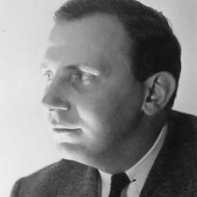

 In 1941, the Russian-born German-American professor of art history H.W. Janson joined the university as professor in the St. Louis School of Fine Arts, and, as a separate task, guided a renewal of the art collection with a new focus on contemporary European artwork, particularly in acquiring works of Cubism, Expressionism and Surrealism. Janson's plan to sell popular canvases such as Frederic Remington's A Dash for the Timber at the New York galleries of the Kende family drew comment from the local paper, wondering why St. Louisans had not been given preference.[7] Janson sold 120 artworks, retained 80, and acquired 40 works by European modernists through the Kende Galleries:[8] Paul Klee, Juan Gris, Theo van Doesburg.[9] Janson also arranged for a permanent home for the museum's collection. He departed in 1948, but in 1960, the museum moved to Steinberg Hall, located on the main university campus. At this time, the museum was also renamed as the Washington University Gallery of Art.
Recently, the museum has continued to focus on the acquisition of contemporary works, including pieces by Jackson Pollock, Robert Rauschenberg and Jenny Holzer. In 2004, the museum was again renamed, this time as the Mildred Lane Kemper Art Museum, as a division of the new Sam Fox School of Visual Art and Design. Two years later, in 2006, the museum moved to a new building adjacent to the old Steinberg Hall. The 65,000-square-foot (6,000 m2) expansion was designed by Fumihiko Maki, and is also home to the Washington University Art and Architecture library and the department of Art History and Archaeology. In May 2018, the museum was closed as part of a larger construction project at Washington University. The expansion, on the north side of the Kemper Art Museum, created a new facade composed of 30-foot-tall pleated stainless steel panels. It also included a redesigned entrance and a new 2,700-square-foot exhibition space named the James A. Kemper Gallery. The museum's Florence Steinberg-Weil Sculpture Garden was relocated to a setting north of the Sam Fox School's new Anabeth and John Weil Hall.[10] In September 2019, the newly expanded and renovated Mildred Lane Kemper Art Museum opened with a major exhibition of work by Ai Weiwei: "Bare Life".[11] The Kemper Art Museum is currently part of the Sam Fox School of Design & Visual Arts at Washington University, which comprises the College of Art, the College of Architecture, and the Kemper Art Museum. The Sam Fox School was established in 2005 to link strong studio programs in modern art and architecture with the resources and programs of the Museum. Creation of the Sam Fox School follows a nearly $60 million investment in new and renovated art, architecture, and museum facilities. The five-building complex includes two new buildings by Pritzker Prize-winning architect Fumihiko Maki, including the Mildred Lane Kemper Art Museum building. The Sam Fox School is dedicated to the creation, study, and exhibition of multidisciplinary and collaborative work with an emphasis on fostering creativity and intellectual exchange.